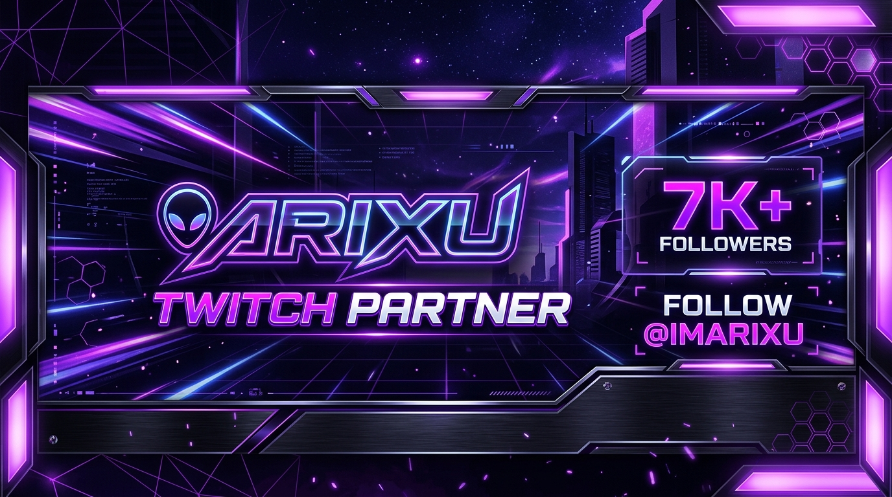

CAMINO A PARTNER TWITCH
¡Bienvenido a la central de eventos de ImArixu! Durante esta semana celebramos la meta Partner de Twitch con 7 días únicos cargados de minijuegos participativos para el chat, castigos en vivo y recompensas comunitarias.
🚀 ¡Operación Partner: El sprint final hacia la meta! 💜
Familia, estamos rozando un sueño increíble. Como sabéis, el gran objetivo de la comunidad ahora mismo es alcanzar el codiciado Partner de Twitch. Para lograrlo, necesitamos consolidar nuestra media por encima de los 75 espectadores en cada directo, ¡y gracias a vosotros estamos más cerca que nunca!
Para dar ese empujón definitivo y celebrar esta meta, hemos preparado algo sin precedentes: 7 días de mini-eventos exclusivos e interactivos. Van a ser streams espectaculares donde vosotros seréis los absolutos protagonistas.
Si eres de los que nos apoya siempre desde YouTube o TikTok, ¡este es tu momento de dar el salto! Hacerse una cuenta en Twitch es totalmente gratis y no se tarda ni un minuto. Además, simplemente dejando la pestaña del stream abierta de fondo (¡recordad mutear la pestaña del navegador, no el reproductor!) nos ayudáis una barbaridad a mantener esa media.
¡No os perdáis la que se viene! Venid a hacer historia con ImArixu y vamos a reventar esa meta juntos. 👾✨
PANEL DE 7 DÍAS DE ESPECIALES
Selecciona cualquier día para descubrir los eventos temáticos programados
La Bomba de Tiempo Cooperativa
Un reactor de energía está al borde del colapso. El chat debe colaborar en vivo ingresando comandos para desactivar la bomba antes de que expire la cuenta regresiva.
El Juicio del Chat & Ruleta de Castigos
El chat toma el control absoluto del directo. Votaciones en tiempo real para imponer normas locas a ImArixu durante las partidas.
Speedrun IRL & Retos Extremos
Pruebas de habilidad física e ingenio en tiempo récord. El tiempo máximo dependerá del ritmo de subs completadas en el directo.
Karaoke a Ciegas & Autotune Extremo
Soundboard interactiva operada por los bits del chat. Efectos de voz cambiantes en directo mientras ImArixu canta las peticiones de la comunidad.
Survival Horror Night & Pulsómetro HUD
Monitor de ritmo cardíaco en vivo en la pantalla. Cada vez que ImArixu supere las 130 pulsaciones por minuto, saltará una donación o reto sorpresa.
Subathon de la Ruleta Cósmica
Premios acumulativos, regalos de merchandising, insignias VIP y multiplicadores de horas para el stream especial de fin de semana.
La Gran Gala Twitch Partner & Arixu Awards
Ceremonia final de entrega de premios de la comunidad, clips más divertidos del año, alfombra roja virtual e invitados en Discord.